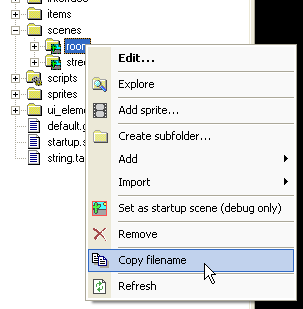
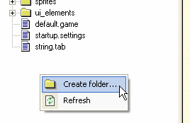
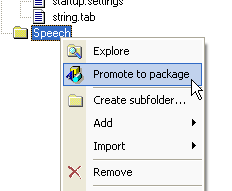
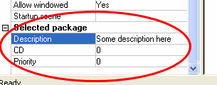

Your game project typically consists of lots of various files, such as images, animations, scripts, sounds etc. WME ProjectMan utility helps you to keep track of your files and to navigate easily.
When developing the game, you often need to reference other project files, for example when calling an animation from a script. In that case, you have to specify the full path to the file, relative to package root (more on packages later). For example, to specify a path to a certain scene from a script, the path will be something like this:
Game.ChangeScene("scenes\room\room.scene");
|
If unsure, you can always use the "Copy filename" command in ProjectMan. To do so, locate the file you want to reference in the project tree, right-click it, and select "Copy filename". This will place the path in correct format into your clipboard. Now simply paste it into your script.

WME introduces a distribution system based on so-called packages. Packages are special files containing game resources in a compressed form (similar to zip archives). Once you compile your game, you can choose to store all the resources in one or more packages. Why to have multiple packages? There are many reasons. Here are some basic uses for packages:
Voice packs - You can store all the speech sounds in a separated package, creating a "voice pack" available separately for download, to reduce size of the basic package.
Localization packages - If you are creating multilingual game, you can divide game resources to normal and localizable. While the basic package remains intact, you can safely translate the localization package to other languages. Then, simply by replacing a single file your game can be switched to other language. The localization package can contain not only a translated string table, but also fonts with different codepage, localized graphics, or even localized sounds/speech.
Patches - The packages can have a certain "priority". If multiple packages contain the same file, WME will select the right one based on the priority of each package. It means you can create patch packages, with a higher priority than the basic game packages. Those patches can contain fixed files and WME will use them instead the original ones.
There can be other uses for packages, such as bonus content, individual game episodes distributed as separate packages etc.
After you create a new project in ProjectMan, there is only one package, called "data". To create a new package, right click the project tree pane somewhere outside the tree and select the "Create folder..." command.

This will create a new folder at the same level as the "data" folder. Now, right-click the new folder and select the "Promote to package" command. From now on, the folder will act as a new package.

The new package can contain subfolders, files etc. After you compile the game, you'll see there are two packages created, the basic "data" packages, and the new one.
If you select a package in the project tree, you can set its properties in the properties pane, including the priority, as discussed above.
